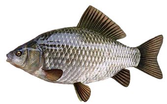

Tasked with finding & documenting 3 examples of noteworthy 'interactivity' between human-computer interfaces and the like from reality, I chose...
|
BBC Earth Experience  |
Mi.Mu Gloves |
Lumini by LuluLab |
|---|
Introduction to Web Design